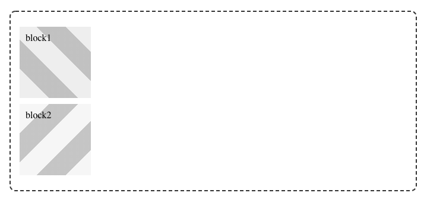
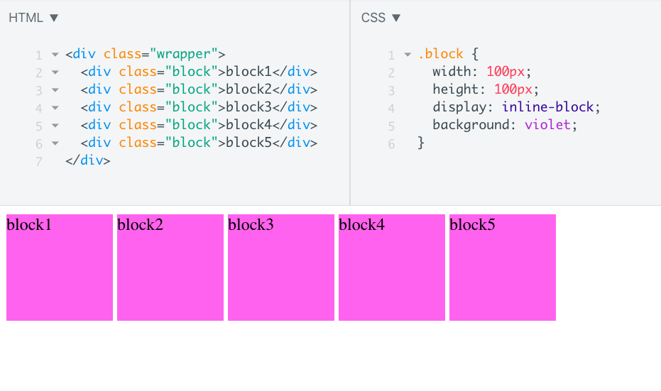
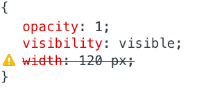

<!doctype html>
<html>
<head>
    <meta charset="utf-8">
    <meta name="viewport" content="width=device-width, initial-scale=1.0, maximum-scale=1.0, user-scalable=no">
    <link rel="stylesheet" href="reveal/css/reveal.css">
    <link rel="stylesheet" href="reveal/css/theme/kontur-light.css" id="theme">
    <!-- Theme used for syntax highlighting of code -->
    <link rel="stylesheet" href="reveal/css/highlight/idea-for-light.css">
    <link rel="stylesheet" href="reveal/css/highlight/darkula-for-dark.css">

    <script defer src="reveal/js/head.min.js"></script>
    <script defer src="reveal/js/reveal.js"></script>
    <script defer src="reveal/initialize.js"></script>
    <script defer src="reveal/js/d3.min.js"></script>

    <title>Позиционирование</title>
</head>
<body>

<div class="reveal"><div class="slides">

<section data-markdown><script type="text/template">

# Позиционирование

</script></section>

<section data-markdown><script type="text/template">

## Абсолютное позиционирование

***

### Относительно чего отсчет?

<ul>
    <li class="fragment" data-fragment-index="1">если заданы параметры top, left, bottom или right?
    <li class="fragment" data-fragment-index="2">если не заданы?
</ul>

***

### Домашняя задача


> 2\. Сделай так, чтобы блоки внутри второго wrapper наложились друг на друга, а высота родительского контейнера была
такой, будто блок в нем один.



***

### Хорошие решения

```css
.block1 {
    position: absolute;
    z-index: -1;
}
```

или

```css
.wrapper2 {
    position: relative;
}

.block2 {
    position: absolute;
    top: 15px;
}
```

***

### Плохие решения

```css
.wrapper2 {
    height: 120px;
}
.wrapper2 .block {
    position: absolute;
}
```

```css
.wrapper2 .block2 {
    position: relative;
    left: -124px;
}
```
</script></section>

<section data-markdown><script type="text/template">

## inline-block

***

### Еще раз плохое решение прошлой задачи


```css
.wrapper2 .block2 {
    position: relative;
    left: -124px; /* width: 100px; padding: 10px */
}
```

Откуда 4px?

***

### Разгадка 4px

```html
<section class="wrapper wrapper2">
    <div class="block block1">block1</div>
    <div class="block block2">block2</div>
</section>
```

***

### space nodes

```html
<!-- My document -->
<html>
<head>
    <title>My Document</title>
</head>
<body>
    <h1>Header</h1>
    <p>
        Paragraph
    </p>
</body>
</html>
```


[MDN](https://developer.mozilla.org/en-US/docs/Web/API/Document_Object_Model/Whitespace_in_the_DOM)

***

### Как бороться?



***

### Как бороться?

<ul>
    <li class="fragment" data-fragment-index="1">минификация HTML
    <li class="fragment" data-fragment-index="2">`font-size: 0;`
    <li class="fragment" data-fragment-index="3">Использовать flexbox
    <li class="fragment" data-fragment-index="4">Незакрытие тегов
</ul>

***

### Как бороться ~~не надо~~?

```html
<div class="wrapper">
    <div class="block">block1</div
    ><div class="block">block2</div
    ><div class="block">block3</div
    ><div class="block">block4</div
    ><div class="block">block5</div>
</div>
```

</script></section>

<section data-markdown><script type="text/template">

## Ошибки в стилях

***

### Что будет, если сделать так:

```css
.block {
    height: 120 px;
}
```

или

```css
.block {
    background-color: 10px;
}
```

или

```css
.block {
    аувыпвап: 10px;
}
```

***

### CSS просто игнорирует все




***

### Это хорошо,

но это значит, что следить за валидностью придется самим

</script></section>

<section data-markdown><script type="text/template">

## Путь крутого верстальщика

***

### Невозможно знать все свойства и теги

- стандарты меняются каждый день
- поддржка браузерами разных стандартов меняется каждый день
- свойств очень много: запоминаются только те, которыми пользуешься

***

### Крутой верстальщик:

- в курсе, что выходит нового
- знает какие классы задач решаются какими методами
- идеально знает главные концепции: отступы, размеры, позиционирование
- знает где найти все остальное

***

### Например

- я понятия не имею, какие у флехбоксов названия свойстви и их значения, но знаю, где посмотреть
- не писала на продакшене гриды, но знаю, когда ими надо воспользоваться
- редко могу изобрести градиент сама, копирую исходник откуда-то и редактирую его
- никогда не использовала свойство filter


</script></section>

<section data-markdown><script type="text/template">

## Знания, которые сегодня пригодятся

</script></section>

<section data-markdown><script type="text/template">

## Относительные единицы измерения

***

### Проценты

```css
    width: 45%;
```

***

### Неочевидности в процентах

```css
    margin-top: 50%;
```

Для margin и padding проценты считаются от ширины родителя.

***

### Хак для сохранения соотношений сторон

```css
.photo {
    display: inline-block;
    width: 30%;
    background-image: url(img.jpg);
    background-size: cover;
    background-position: 50% 50%;
}

.photo:after {
    content: '';
    display: block;
    padding-top: 56.25%; /* 16:9 (9/16*100) */
}
```

***

### vh, vw, vmin, vmax

***

### Как сделать блок на весь экран

```css
.overlay {
    width: 100vw;
    height: 100vh;
}
```

***

### Как сделать блок на весь экран c фиксированным отступом

```css
.overlay {
    width: calc(100vw - 50px);
}
```

</script></section>

<section data-markdown><script type="text/template">

## Полезные свойства

***

### overflow

Свойство, определяющее, что делать, если контент вылазит за пределы блока.


***

### overflow: hidden

<div style="text-transform: uppercase; width: 450px; height: 450px; font-size: 128px; color: black; border: 4px solid;
padding: 16px; box-sizing: border-box; line-height: 1.1; overflow: hidden">CSS is Awesome</div>

***

### overflow: scroll

<div style="text-transform: uppercase; width: 450px; height: 450px; font-size: 128px; color: black; border: 4px solid;
padding: 16px; box-sizing: border-box; line-height: 1.1; overflow: scroll">CSS is Awesome</div>

***

### overflow: auto

<div style="text-transform: uppercase; width: 450px; height: 450px; font-size: 128px; color: black; border: 4px solid;
padding: 16px; box-sizing: border-box; line-height: 1.1; overflow: auto">CSS is Awesome</div>

***

### overflow: visible

<div style="text-transform: uppercase; width: 450px; height: 450px; font-size: 128px; color: black; border: 4px solid;
padding: 16px; box-sizing: border-box; line-height: 1.1; overflow: visible">CSS is Awesome</div>

***

### overflow: hidden + text-overflow: ellipsis;

<div style="text-transform: uppercase; width: 450px; height: 450px; font-size: 128px; color: black; border: 4px solid;
padding: 16px; box-sizing: border-box; line-height: 1.1; overflow: hidden; text-overflow: ellipsis;">CSS is Awesome</div>


</script></section>

</div></div>
</body>
</html>
